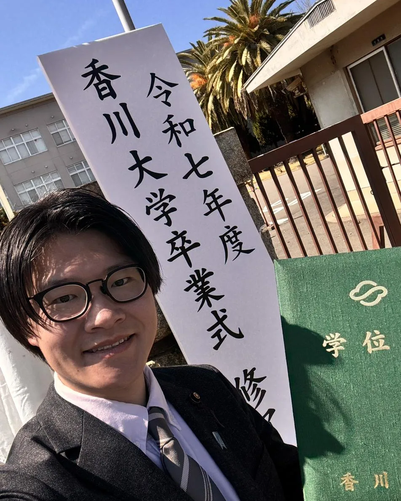
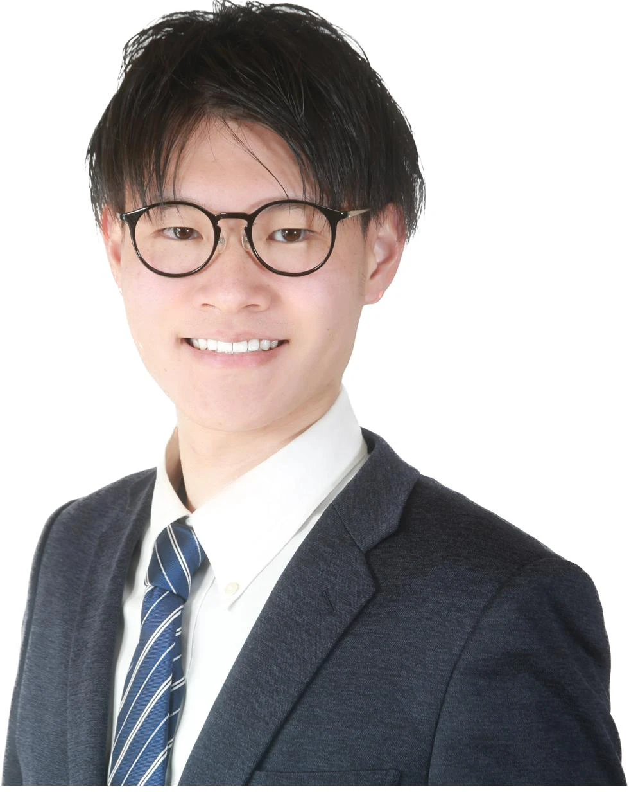
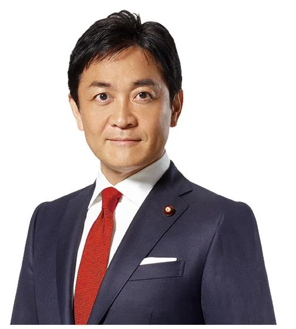

29歳の挑戦 ｜ KOKI MAEKAWA
声を聴き、動き、カタチにする。県民とともに進める、香川の未来づくり。
国民民主党・高松市議会議員（2023年 最年少当選）
前川 こうきMAEKAWA KOKI
交渉力 × 行動力
高松市議選 最年少当選
暮らしに直結する仕事を
香川大学大学院 経営修士
PROFILE
高松市（旧綾歌郡）国分寺町生まれ。現場を確認し、関係者と協議し、行政に粘り強く働きかける。
交渉力と行動力が武器の29歳です。

高松市（旧綾歌郡）国分寺町に生まれる
国分寺北部幼稚園・小学校、国分寺中学校で育つ。
坂出工業高校 電気科 → 徳島文理大学 卒業
高校では生徒会 会長・会計を務める。徳島文理大学香川キャンパス 理工学部 電子情報工学科 卒業。
県議インターンを経て、玉木雄一郎事務所 秘書
山本さとし県議会議員インターン生、たまき雄一郎事務所 秘書として政治の現場を経験。
高松市議会議員 初当選（25歳・最年少）
子育て・教育、交通、防災、地域課題など、暮らしに直結するテーマに向き合う。
地域とともに、学びながら働く
高松市消防団国分寺分団・商工会青年部で地域活動。個人事業主（パソコン修理・自動車販売など）。香川大学大学院 地域マネジメント研究科で経営修士（MBA）取得。防災士・第二種電気工事士など資格多数。

前川こうきは、地域の声を一つひとつ丁寧に受け止め、暮らしに根ざした政策提案と行動で、まちづくりに取り組んでまいりました。市民の皆さまからいただく声の中には、すぐに解決できるものばかりではありません。しかし、だからこそ、現場を確認し、関係者と協議し、行政に粘り強く働きかけることが重要です。
これからも、声を聴くだけで終わらせず、必要な制度や予算につなげ、地域の課題を一歩ずつ前に進めてまいります。香川の未来を、皆さまとともに。前川こうきは、交渉力と行動力で挑戦を続けます。

前川こうきさんは、地域の声を大切にし、現場で課題を見つけ、粘り強く行政に届ける行動力のある若い政治家です。香川の未来を前に進めるためには、世代を超えて地域をつなぎ、課題解決に向けて交渉できる力が必要です。「前川こうきさん」の挑戦を、私も応援しています。
玉木 雄一郎国民民主党代表・衆議院議員
POLICY
前川こうきの、まちづくり羅針盤。「対決より解決」の姿勢で、暮らしに直結する課題を一歩ずつ前へ。
POLICY 01 ─ 子育て・教育
ずーっと暮らしてみまい！帰ってきまい！POLICY 02 ─ 交通・まちづくり
楽しく暮らしまい！POLICY 03 ─ 防災・安心
安心しーまい！POLICY 04 ─ 地域活性化
つながりまい！NEWS & ACTIVITY
日々の活動は X（旧Twitter）で発信中。最新の投稿を自動で表示しています。
SUPPORT
あなたに合った方法で、力を貸してください。お申し込みは各フォームから約3分で完了します。
党員 年4,000円 ／ サポーター 年2,000円
国民民主党の党員・サポーターとして、代表選挙への参加など党の活動に関わることができます。（後援会入会を含みます）
申込フォームへ →